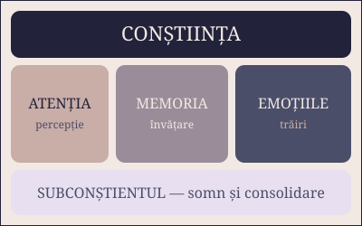

PSIHOLOGIA UMANĂ · STUDIUL INDIVIDUAL I
Psihologia Umană
Înțelegerea minții și a comportamentului: de la percepție la emoții, de la memorie la somn.


Ce este psihologia?
Psihologia este studiul științific al minții și al comportamentului . Spre deosebire de bunul sim, psihologia își verifică afirmațiile prin experimente repetate -- la fel ca în orice știință. Dacă vrei parcurgerea completă, urmează Ghidul , apoi relaxează-te cu secțiunea multimedia și încheie cu chestionarul .
Cum citim o afirmație psihologică? În nota de laborator:
M = 75, σ = 12
,
media
spune unde se strâng scorurile, iar
abaterea standard
cât de mult se răspândesc.
Afirmația
folosim doar 10% din creier
este
un mit foarte răspândit!
imaginile medicale arată activitate în
toate zonele creierului
, nu doar într-un fragment.
Termeni de bază, pe scurt
Mai multe informatii pe Wikipedia .
- psihologie
- studiul științific al minții și al comportamentului;
- cogniție
- totalitatea proceselor prin care achiziționăm și prelucrăm informația;
- afect
- ansamblul trăirilor: emoții, sentimente, dispoziții;
- comportament
- totalitatea reacțiilor observabile ale unei persoane;
- psihic
- funcția superioară de reflectare a realității, particulară omului.
Notă:
definițiile sunt simplificate. Formula completă a retenției:
R(t) = e
-t/s
, unde
t
= timpul,
s
= stabilitatea amintirii.
Ce vei afla?
Temele site-ului
-
Procese cognitive
- percepția și atenția;
- memoria și uitarea.
-
Stări și trăiri
- emoții de bază;
- stres și adaptare;
- somn și consolidare.
- tipare de personalitate;
- mituri și dovezi;
- metode de autoobservare.
Obiectivele, în ordine
- să identifici procesele psihice în viața de zi cu zi;
- să diferențiezi emoția de dispoziție și de temperament;
- să aplici exercițiul de atenție și respirația 4-7-8;
- să recunoști miturile populare despre creier;
- să îți organizezi somnul pentru o memorie mai bună.
Cum poți învăța eficient
- citește o secțiune pe zi;
- repeta maine ce ai citit azi;
- explică cuiva, în cuvintele tale.
RECOMANDARE: PARCURGE PAGINILE ÎN ORDINEA MENIULUI.
Pașii de autoobservare, rezumați:
- observă starea;
- noteaz-o;
- revino peste o zi.
Iar scalele clasice de evaluare:
- niciodată;
- uneori;
- des;
- întotdeauna.
Capitolele mari ale ghidului:
- percepția și atenția;
- memoria și uitarea;
- emoțiile și stresul;
- somnul și consolidarea.
Personalitatea: modelul Big Five
Personalitatea se observă în
tipare repetate
de gândire, trăire și acțiune sau, cum spunea
Carl Rogers
:
Curajul de a fi tu însuți este începutul oricărei schimbări.
| Trăsătura | Scor mic | Scor mediu | Scor mare |
|---|---|---|---|
| Deschidere | concret |
curios, organizat
echilibrul tipic |
imaginativ |
| Conștiințiozitate | spontan | metodic | |
| Extraversie | rezervat | sociabil | expresiv |
| Agreabilitate | critic | cooperant | compătimitor |
| Stabilitate emoțională | reactiv | echilibrat | calm |
| Scorurile descriu tendințe, nu destine: contextul și efortul schimbă comportamentul. | |||
Harta psihicului
Diagrama de mai jos este
clickable
: fiecare zonă te duce la capitolul ei din
pagina Ghid
. Harta e desenată cu imagini clickable (
usemap
).

Mică provocare
Dacă ai putea observa un singur proces psihic timp de o zi: memoria, atenția sau emoțiile
pe care l-ai alege? Scrie două propoziții despre alegerea ta în
chestionarul de autoevaluare
.
Definiții suplimentare găsești pe
Wikipedia - Psihologie
.